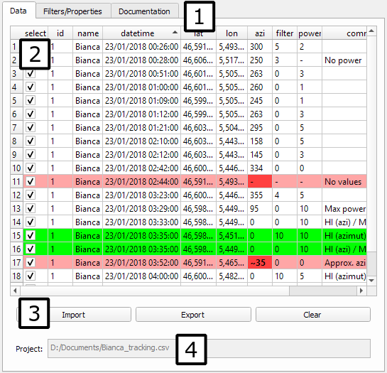

Welcome to the Radiotrack's documentation. You should read the explanations below to understand what you can do and how. After that, you can use the menu above to read about other topics.
This plugin was developped to help viewing and correcting manual telemetric data. The first users were measuring signals from a bat with a radioemitter at night. With the direction and the strength of the signal, they could guess where the bat is.
The data is stored in CSV files and consists of latitude-longitude coordinates, an azimuth and the strength of the signal. When filling those files, the users can do mistakes, thus making the data unusable. When importing a CSV file, the plugin indicates which data is erroneous and enables the user to correct it.
The plugin has a graphical user interface that is brought up by either using the Ctrl+Alt+B keyboard shortcut, or by using QGIS' "Extensions" menu, selecting "Radiotrack", and "Open/close Radiotrack", or clicking the black bat icon if available. This interface is described later on this page.
After importing a file, two map layers are created: one drawing dots where measures were taken, and one drawing lines indicating in which direction the measured signal comes from. The length of the line depends on the strength of the signal. A weaker signal means a further radioemitter, thus a longer line. If the data contains errors, some dots or lines won't be drawn until the errors are corrected.
The table can be edited to correct the errors. Once everything is fine, you can export the result as a CSV file.
The following image shows the plugin on its main tab with numbers marking the useful parts.
The plugin has different tabs, indicated by (1). This documentation is in the "Documentation" tab. The main tab was selected for the screenshot.
After clicking the "Import" button, in the buttons area (3), and selecting a valid CSV file, the table (2) will show the file's data. A pink row contains errors. It means that one or more cells contain data that can't be used as is. Such cells are red. You can select a cell and type to inout valid data. When hitting the Enter key or leaving the cell, its content will be checked. If it is valid, the red goes away, and the pink too if the line no longer contains errors. Also, the map will be updated. This is actually true for each cell: putting erroneous data will turn the cells red and remove the associated content on the map.
The button "Save as..." will let you export your edited data to as a CSV file.
The button "Clear" will empty the table and remove the two layers, as if you didn't even use the plugin yet.
The "Project" field is used to remind you which file you imported. However, if you edit the table, their data will no longer match, so don't forget to save your data when you're done.